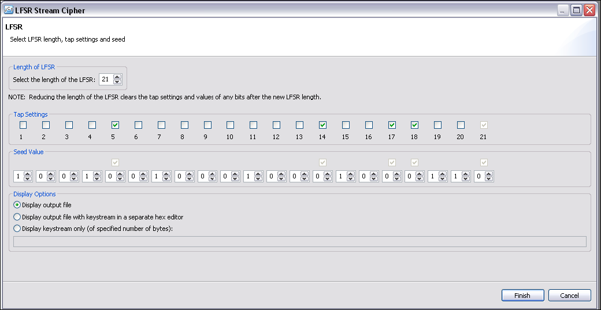
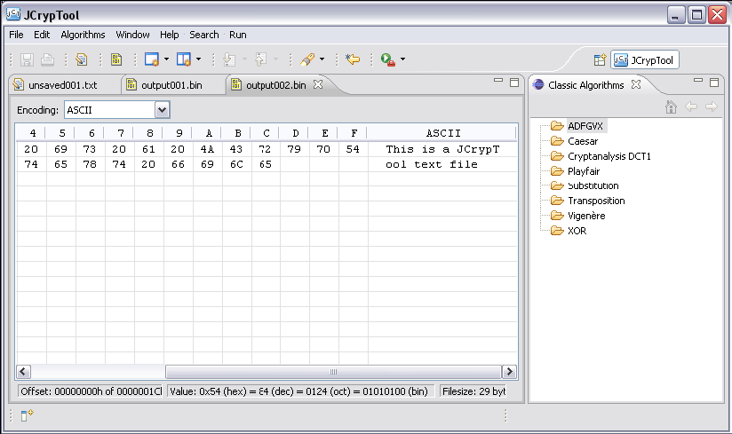
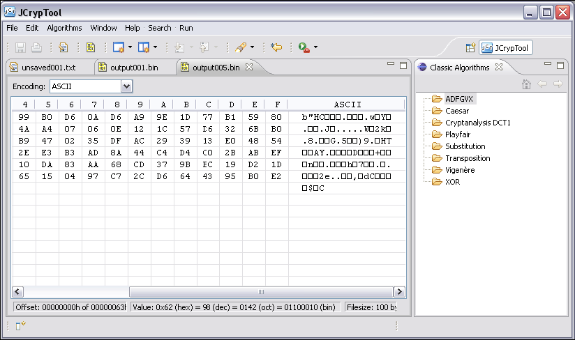

Dieses Tutorial zeigt Ihnen, wie Sie eine Nachricht mit einer einfachen, modernen Strom-Chiffre, dem Linear Feedback Shift Register (LFSR), verschlüsseln oder entschlüsseln können. Die Funktionsweise des LFSR (mit Referenzen und einigen Beispielen) ist in der begleitenden Online-Hilfe beschrieben: LFSR-Verschlüsselung.
Note: Mit diesem Dialog (Wizard, Assistenten) können Sie entweder einfach den Schlüsselstrom erzeugen/ausgeben, oder Sie generieren den Schlüsselstrom und verschlüsseln/entschlüsseln dann die gegebene Nachricht. Bitte laden Sie zunächst eine Nachricht in den JCT-Editor (wie bei allen Menüpunkten unter Algorithmen -> Symmetrisch wird die Chiffre auf den Inhalt des aktiven Editor-Fensters angewendet).
Diese Hilfedatei beschreibt vier Anwendungsfälle:
1) Verschlüsselung einer Textnachricht mit der LFSR-Chiffre
2) Entschlüsselung eines LFSR-Geheimtexts
3) Zusätzliche Ausgabe des für die Ver- oder Entschlüsselung verwendeten Schlüsselstroms
4) Anzeige des generierten Schlüsselstroms (ohne ihn zur Ver- oder Entschlüsselung zu verwenden)

Wählen Sie die Größe (Registerlänge) des LFSR – hier ist die Länge für Präsentationszwecke eingeschränkt auf einen Wert zwischen 1 und 25. Anschließend ist festzulegen, welche Register-Bits getappt sind und welchen Wert der Seed hat (Der Seed ist der Startwert oder Anfangszustand des LFSR-Registers. Der Inhalt des Registers wird manchmal auch als Stage bezeichnet. Ist ein Register-Bit getappt, wird sein Inhalt in die Berechnung des neuen Input-Bits mit einbezogen).
In unserem Beispiel verwenden wir die Meldung "This is a JCrypTool txt file" und wir haben einen LFSR der Länge 21. Die Bits 5, 14, 17, 18 und 21 sind getappt (beachten Sie, dass das letzte (rechteste, älteste) Bit im Register zum höchsten Grad des binären Polynoms gehört und immer getappt sein muss). Der gewählte LFSR-Seed ist 10010010010001000100010001000110.
Tap = 0000 1000 0000 0100 1100 1 Seed = 1001 0010 0010 0010 0011 0
Der folgende Screenshot (aus CrypTool 2) zeigt das 21-Bit-Register und die 5 Taps im Ausgangszustand.
Wenn Sie auf die Schaltfläche Fertigstellen klicken, startet der Verschlüsselungs-/Entschlüsselungsprozess, der LFSR-Dialog wird geschlossen und die Ausgabe wird in einem neuen JCT-Hexeditor-Fenster angezeigt.

Der resultierende Geheimtext (in output001.bin) kann entschlüsselt werden, indem identische Einstellungen und Werte in demselben Dialog ausgewählt werden, der auch für die Verschlüsselung verwendet wurde. (Hinweis: Die Ausgabe wird in einem Hex-Editor und nicht in einem Texteditor geöffnet, denn moderne Algorithmen basieren auf Bytes, nicht auf Zeichen.)

Wenn Sie auf die Schaltfläche Fertigstellen klicken, startet die Entschlüsselung des Geheimtexts und liefert den korrekten Klartext, der in einem neuen Editorfenster angezeigt wird (output002.bin im Screenshot unten).

Wählt man den zweiten Auswahlknopf (Radiobutton) im Rechteck Ausgabeoptionen, wird nicht nur der Geheimtext sondern auch der bei diesem (Ver-/Entschlüsselungs-)Prozess verwendete Schlüsselstrom in einem separaten Hexeditor-Fenstern angezeigt.
Ein Vergleich des Schlüsselstroms vom Verschlüsselungsprozess mit dem des Entschlüsselungsprozesses zeigt, dass bei identischen Eingaben ein identischer Schlüsselstrom erzeugt wird.

Der Schlüsselstrom wird in einem neuen Editorfenster (output004.bin oben) angezeigt, wobei der Klartext wie gewohnt angezeigt wird (output003.bin).
Wählt man den dritten Auswahlknopf (Radiobutton) im Rechteck Ausgabeoptionen, wird nur der Schlüsselstrom (mit einer bestimmten Anzahl von Bytes) angezeigt. Die Anzahl der zu erzeugenden Bytes für den Schlüsselstrom wird in dem Textfeld dahinter angegeben. Dieses ist nur dann aktiv ist, wenn der Auswahlknopf "Nur Schlüsselstrom ... anzeigen" ausgewählt ist.

Unser Beispiel zeigt die ersten 100 Bytes des Schlüsselstroms (output005.bin oben). Diese wurden mit denselben Werten für Seed und Tap erzeugt wie zuvor.